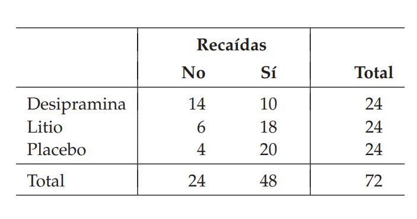
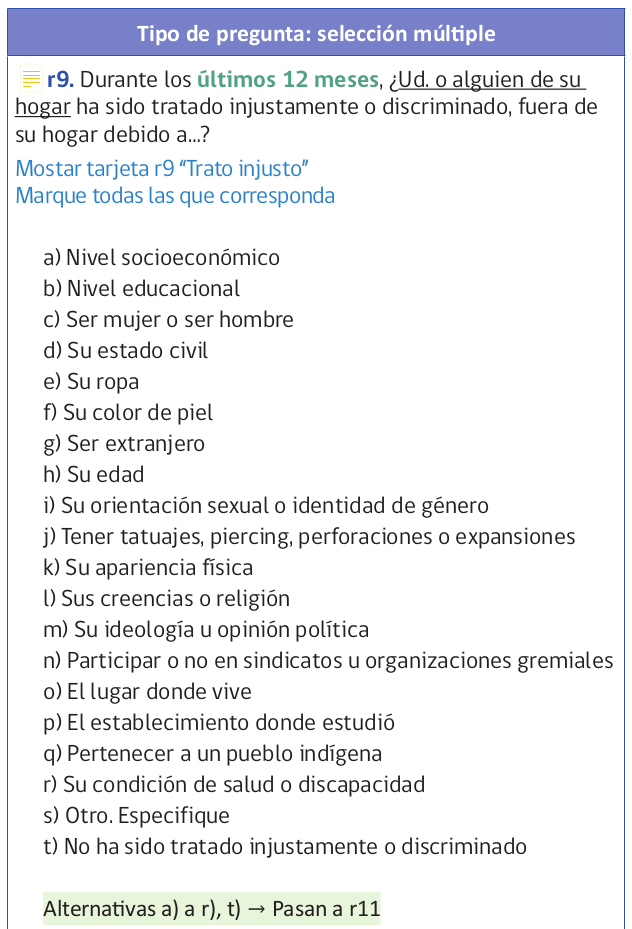
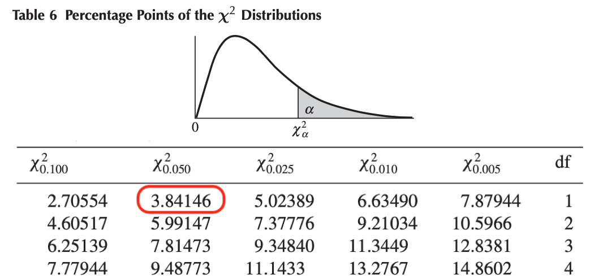

Estadística Correlacional
Inferencia, asociación, y reporte
Juan Carlos Castillo
Sociología FACSO - UChile
2do Sem 2026
correlacional.metodos-facso.org
Sesión 11:
Asociación con variables categóricas 1
¿Preguntas clase pasada?
1. Correlación y variables categóricas
2. Asociación en tablas de contingencia
3. Chi cuadrado (\(\chi^2\))
Correlación y categóricas
sentido original de correlación (Pearson): variables intervalares/razón, también se extiende a ordinal (Spearman)
dadas las ventajas de este coeficiente, se puede extender su uso a variables con nivel de medición nominal con algunas consideraciones
veamos un ejemplo:
Ejemplo
Tenemos las siguientes variables:
Donde x sería una variable nominal dicotómica con valores 1 y 0, mientras que y es una variable continua (intervalar)
Este tipo de correlación se denomina punto biserial
Cálculo del coeficiente de correlación
Pearson's product-moment correlation
data: x and y
t = 0.67064, df = 9, p-value = 0.5193
alternative hypothesis: true correlation is not equal to 0
95 percent confidence interval:
-0.4391885 0.7233704
sample estimates:
cor
0.2181635 (Se puede también usar cor, pero cor.test entrega más información)
Del output de R tenemos que:
la correlación punto biserial es 0.218, indicando una relación positiva moderada entre ambas variables
el valor p correspondiente es 0.5193, que no permite rechazar la hipótesis nula con un 95% de confianza ya que el valor p no es menor a 0.05
como complemento se entrega el intervalo de confianza [-0.4391885 0.7233704], que como vemos contiene el 0, y por lo tanto con un 95% de confianza no podemos decir que la correlación es distinta de 0
¿Qué es esta correlación?
no es más que una correlación de Pearson entre una variable nominal y una intervalar
para diferenciarla de Pearson tradicional se le denomina correlación punto biserial
hay que tener precauciones con su interpretación
Interpretación
pensemos que x=0 es hombre, x=1 es mujer, y que y=nivel educativo, ¿cómo se interpreta la correlación?
- inferencia: que existe (o no) una asociación entre ambas variables (según si es estadísticamente distinta de cero)
- tamaño: que esta asociación es débil, mediana o fuerte
- sentido: difícil de interpretar, ej: mientras “más mujer”, mayor educación (?)
Por lo tanto, esta correlación puede tener limitaciones en la interpretación de su sentido, sirve principalmente para inferencia y tamaño.
¿Qué test / cálculo podría ser más apropiado para la relación entre una variable intervalar y una dicotómica?
Two Sample t-test
data: y by x
t = -0.67064, df = 9, p-value = 0.5193
alternative hypothesis: true difference in means between group 0 and group 1 is not equal to 0
95 percent confidence interval:
-8.891987 4.825320
sample estimates:
mean in group 0 mean in group 1
14.16667 16.20000 Por lo tanto, correlación punto-biserial
es equivalente a un test de diferencia de medias en términos de inferencia
en términos de valor es igual que una correlación de Pearson: varía entre -1 y 1
el apellido de (punto) biserial se utiliza solo para dar cuenta que el nivel de medición de una de las variables es nominal, y se requieren consideraciones especiales en su interpretación
también se puede denominar biserial a una correlación entre una variable intervalar/razón y una ordinal
El sentido general de realizar correlaciones de Pearson con variables categóricas es el supuesto que la categórica representa distintos niveles de una variable latente continua
Ej: 0=baja educación, 1=alta educación
Caso especial: correlación tetracórica
Es una correlación entre dos variables dicotómicas (=categórica de dos niveles)
Se calcula en base a las frecuencias de cada combinación de valores (00,01,10,11).
Supone que ambas variables son continuas y normalmente distribuidas antes de la categorización.
Tipos de correlación según nivel de medición
| Nominal Dicotómica | Nominal Politómica | Ordinal | Intervalar/Razón | |
|---|---|---|---|---|
| Nominal Dicotómica | Tetracórica | Biserial | Punto Biserial | |
| Nominal Politómica | ||||
| Ordinal | Biserial | Spearman, Kendall | Pearson/biserial, Policórica | |
| Intervalar/Razón | Punto Biserial | Pearson/biserial, Policórica | Pearson |
1. Correlación y variables categóricas
2. Asociación en tablas de contingencia
3. Chi cuadrado (\(\chi^2\))
Escalas de medición de variables
- NOIR: Nominal, Ordinal, Intervalar, Razón
| Tipo | Características | Propiedad de números | Ejemplo |
|---|---|---|---|
| Nominal | Uso de números en lugar de palabras | Identidad | Nacionalidad |
| Ordinal | Números se usan para ordenar series | + ranking | Nivel educacional |
| Intervalar | Intervalos iguales entre números | + igualdad | Temperatura |
| Razón | Cero real | + aditividad | Distancia |
Tipos de datos en relación a escalas de medición
Datos categóricos:
- pueden ser medidos sólo mediante escalas nominales, u ordinales en caso de orden de rango
Datos continuos:
- Medidos en escalas intervalares o de razón
- Pueden ser transformados a datos categóricos
Tablas de contingencia o tablas cruzadas
Son tablas que presentan la distribución conjunta de dos o más variables
Ej. Moore cap 9: recaídas en consumo de cocaína luego de tratar adicción con distintos tratamientos

Tablas de contingencia y asociación
¿Cómo establecer una medida de asociación de los datos en una tabla de contingencia?
¿Cómo saber si esa asociación es estadísticamente significativa?
Ejemplo
Pensemos en la siguiente pregunta de investigación:
¿Existe una asociación entre la percepción de ser discriminado y el nivel educacional?
\(H_a\): el nivel educacional se asocia a la percepción de ser discriminado
\(H_0\): no hay asociación entre nivel educacional y percepción de ser discriminado
Vamos a los datos: CASEN 2022
En CASEN existe una batería sobre percepción de discriminación:

Generar subset CASEN con educación y percepción de discriminación
pacman::p_load(haven, sjmisc, dplyr)
casen2022_chi <- read_dta("/home/juank/Downloads/Base de datos Casen 2022 STATA.dta")
summary(casen2022$r9)
sjmisc::find_var(data = casen2022_chi,"discriminado")
sjmisc::find_var(data = casen2022_chi,"nivel educacional")
casen2022_chi <- casen2022_chi %>%
select(r9a:r9t, e6a) # seleccionar variables
casen2022_chi <- casen2022_chi %>%
rename("educacion"=e6a) #renombrar
save(casen2022_chi,
file = "slides/data/casen2022_chi.Rdata") #guardar objeto
rm(list = c('casen2022_chi')) # quitar del environment por tamaño/memoriaRecodificar discriminación
r9t. Últ. 12 meses: No ha sido tratado injustamente o discriminado (x) <numeric>
# total N=202231 valid N=202231 mean=0.83 sd=0.37
Value | Label | N | Raw % | Valid % | Cum. %
-------------------------------------------------
0 | No | 33472 | 16.55 | 16.55 | 16.55
1 | Sí | 168759 | 83.45 | 83.45 | 100.00
<NA> | <NA> | 0 | 0.00 | <NA> | <NA>En la lista CASEN al final hay un ítem de “no ha sido discriminado” (r9t), que usaremos para nuestro análisis; la renombramos “discrim”
Quienes responden sí son quienes no se han sentido discriminados, por lo tanto mejor cambiar las etiquetas para evitar confusiones
r9t. Últ. 12 meses: No ha sido tratado injustamente o discriminado (x) <numeric>
# total N=202231 valid N=202231 mean=0.83 sd=0.37
Value | Label | N | Raw % | Valid % | Cum. %
-----------------------------------------------------------
0 | discriminad@ | 33472 | 16.55 | 16.55 | 16.55
1 | no discriminad@ | 168759 | 83.45 | 83.45 | 100.00
<NA> | <NA> | 0 | 0.00 | <NA> | <NA>Variable educación universitaria
Ahora con la variable educación, recodificar universitario=1
e6a. ¿Cuál es el nivel educacional al que asiste o el más alto al cual asistió? (x) <numeric>
# total N=202231 valid N=202231 mean=0.16 sd=0.37
Value | Label | N | Raw % | Valid % | Cum. %
-------------------------------------------------------------------
0 | Menos que universitaria | 168994 | 83.56 | 83.56 | 83.56
1 | Universitaria o más | 33237 | 16.44 | 16.44 | 100.00
<NA> | <NA> | 0 | 0.00 | <NA> | <NA>Tabla de frecuencias cruzadas
| e6a. ¿Cuál es el nivel educacional al que asiste o el más alto al cual asistió? |
r9t. Últ. 12 meses: No ha sido tratado injustamente o discriminado |
Total | |
|---|---|---|---|
| discriminad@ | no discriminad@ | ||
| Menos que universitaria |
26996 | 141998 | 168994 |
| Universitaria o más | 6476 | 26761 | 33237 |
| Total | 33472 | 168759 | 202231 |
| χ2=247.461 · df=1 · &phi=0.035 · p=0.000 | |||
Porcentajes por columna
Para mayor claridad generamos porcentajes por columnas de la tabla (discriminación)
| e6a. ¿Cuál es el nivel educacional al que asiste o el más alto al cual asistió? |
r9t. Últ. 12 meses: No ha sido tratado injustamente o discriminado |
Total | |
|---|---|---|---|
| discriminad@ | no discriminad@ | ||
| Menos que universitaria |
26996 80.7 % |
141998 84.1 % |
168994 83.6 % |
| Universitaria o más | 6476 19.3 % |
26761 15.9 % |
33237 16.4 % |
| Total | 33472 100 % |
168759 100 % |
202231 100 % |
| χ2=247.461 · df=1 · &phi=0.035 · p=0.000 | |||
Porcentajes por fila
Y acá por filas (educación)
| e6a. ¿Cuál es el nivel educacional al que asiste o el más alto al cual asistió? |
r9t. Últ. 12 meses: No ha sido tratado injustamente o discriminado |
Total | |
|---|---|---|---|
| discriminad@ | no discriminad@ | ||
| Menos que universitaria |
26996 16 % |
141998 84 % |
168994 100 % |
| Universitaria o más | 6476 19.5 % |
26761 80.5 % |
33237 100 % |
| Total | 33472 16.6 % |
168759 83.4 % |
202231 100 % |
| χ2=247.461 · df=1 · &phi=0.035 · p=0.000 | |||
Porcentajes por fila y columna
| e6a. ¿Cuál es el nivel educacional al que asiste o el más alto al cual asistió? |
r9t. Últ. 12 meses: No ha sido tratado injustamente o discriminado |
Total | |
|---|---|---|---|
| discriminad@ | no discriminad@ | ||
| Menos que universitaria |
26996 16 % 80.7 % |
141998 84 % 84.1 % |
168994 100 % 83.6 % |
| Universitaria o más | 6476 19.5 % 19.3 % |
26761 80.5 % 15.9 % |
33237 100 % 16.4 % |
| Total | 33472 16.6 % 100 % |
168759 83.4 % 100 % |
202231 100 % 100 % |
| χ2=247.461 · df=1 · &phi=0.035 · p=0.000 | |||
| e6a. ¿Cuál es el nivel educacional al que asiste o el más alto al cual asistió? |
r9t. Últ. 12 meses: No ha sido tratado injustamente o discriminado |
Total | |
|---|---|---|---|
| discriminad@ | no discriminad@ | ||
| Menos que universitaria |
26996 16 % 80.7 % |
141998 84 % 84.1 % |
168994 100 % 83.6 % |
| Universitaria o más | 6476 19.5 % 19.3 % |
26761 80.5 % 15.9 % |
33237 100 % 16.4 % |
| Total | 33472 16.6 % 100 % |
168759 83.4 % 100 % |
202231 100 % 100 % |
| χ2=247.461 · df=1 · &phi=0.035 · p=0.000 | |||
¿Cómo saber si existe asociación o no entre estas variables?
Para simplificar, pensemos en una muestra más pequeña de 100 casos y además balanceada.
| discriminad@ | no discriminad@ | Total | |
|---|---|---|---|
| Menos que universitaria | 50 | ||
| Universitaria o más | 50 | ||
| Total | 50 | 50 | 100 |
¿Cómo se deberían distribuir los casos en las celdas para constatar que hay (o no) diferencias?
| discriminad@ | no discriminad@ | Total | |
|---|---|---|---|
| Menos que universitaria | 50 | 0 | 50 |
| Universitaria o más | 0 | 50 | 50 |
| Total | 50 | 50 | 100 |
Esta tabla estaría expresando lo esperado por nuestra hipótesis (alternativa): existen diferencias al cruzar estas variables, y por lo tanto hay asociación entre educación y percepción de discriminación
Este es el otro extremo: todas las celdas tienen la misma cantidad de casos
| discriminad@ | no discriminad@ | Total | |
|---|---|---|---|
| Menos que universitaria | 25 | 25 | 50 |
| Universitaria o más | 25 | 25 | 50 |
| Total | 50 | 50 | 100 |
Esta tabla expresa la hipótesis nula \(H_0\): no existe asociación entre variables
1. Correlación y variables categóricas
2. Asociación en tablas de contingencia
3. Chi cuadrado (\(\chi^2\))
Prueba de \(\chi^2\)
La prueba de \(\chi^2\) (chi cuadrado) se utiliza para inferencia sobre asociación de variables categóricas en una tabla de contingencia
\(\chi^2\) se basa en un test de diferencia, donde se compara nuestra tabla de contingencia y una tabla donde no existe asociación entre variables, que representa la hipótesis nula \(H_0\)
La lógica detrás es que si nuestra tabla es significativamente distinta de una tabla sin asociación, entonces podemos rechazar la hipótesis nula
Pasos en el cálculo de \(\chi^2\)
Generación de tabla de contingencia observada en base a nuestros datos
Generación de tabla de contingencia esperada al azar en base a nuestros datos
Establecer la diferencia entre lo observado y lo esperado al azar
Establecer si esta diferencia es estadísticamente significativa
Frecuencia esperada al azar en una tabla de contingencia
| discriminad@ | no discriminad@ | Total | |
|---|---|---|---|
| Menos que universitaria | a | b | (a+b) |
| Universitaria o más | c | d | (c+d) |
| Total | (a+c) | (b+d) | N |
Frecuencia esperada: celda a
Nos enfocamos en la celda a, su frecuencia esperada es:
\[f_{e_{a}}=\frac{(a+b)(a+c)}{N}\]
En base a los datos de nuestro ejemplo de 100 casos:
\[f_{e_{a}}=\frac{(50)(50)}{100}= \frac{2500}{100}=25\]
Por lo tanto, la frecuencia esperada al azar (\(H_0\)) para la celda a=25
Sentido general de la prueba de \(\chi^2\)
La lógica de la prueba de Chi 2 es la comparación de las frecuencias observadas \((f_o)\) en nuestra tabla y de las frecuencias esperadas \((f_e)\) por azar
Si nuestra tabla \((f_o)\) se diferencia significativamente del azar \((f_e)\), entonces podemos rechazar la hipótesis nula y tenemos evidencia de asociación entre variables
\[f_{e_{a}}=\frac{(a+b)(a+c)}{N}\] \[f_{e_{b}}=\frac{(a+b)(b+d)}{N}\] \[f_{e_{c}}=\frac{(a+c)(c+d)}{N}\] \[f_{e_{d}}=\frac{(b+d)(c+d)}{N}\]
| discriminad@ | no discriminad@ | Total | |
|---|---|---|---|
| Menos que universitaria | a | b | (a+b) |
| Universitaria o más | c | d | (c+d) |
| Total | (a+c) | (b+d) | N |
\[\chi^2=\sum\frac{(f_o-f_e)^2}{f_e}\]
El valor de Chi2 será mayor en la medida que lo observado sea distinto de lo esperado al azar
Frecuencias esperadas: ejemplo CASEN
| e6a. ¿Cuál es el nivel educacional al que asiste o el más alto al cual asistió? |
r9t. Últ. 12 meses: No ha sido tratado injustamente o discriminado |
Total | |
|---|---|---|---|
| discriminad@ | no discriminad@ | ||
| Menos que universitaria |
26996 | 141998 | 168994 |
| Universitaria o más | 6476 | 26761 | 33237 |
| Total | 33472 | 168759 | 202231 |
| χ2=247.461 · df=1 · &phi=0.035 · p=0.000 | |||
\[f_{e_{a}}=\frac{168994*33472}{202231}=27970.8\] \[f_{e_{b}}=\frac{168994*168759}{202231}=141023.2\] \[f_{e_{c}}=\frac{33472*33237}{202231}=5501.2\] \[f_{e_{d}}=\frac{168759*33237}{202231}=27735.8\]
Frecuencias esperadas en R
En R también es posible obtener las frecuencias esperadas por celda con la función CrossTable de la librería gmodels
Cell Contents
|-------------------------|
| N |
| Expected N |
|-------------------------|
Total Observations in Table: 202231
| casen2022_chi$discrim
casen2022_chi$educ_sup | 0 | 1 | Row Total |
-----------------------|-----------|-----------|-----------|
0 | 26996 | 141998 | 168994 |
| 27970.821 | 141023.179 | |
-----------------------|-----------|-----------|-----------|
1 | 6476 | 26761 | 33237 |
| 5501.179 | 27735.821 | |
-----------------------|-----------|-----------|-----------|
Column Total | 33472 | 168759 | 202231 |
-----------------------|-----------|-----------|-----------|
Statistics for All Table Factors
Pearson's Chi-squared test
------------------------------------------------------------
Chi^2 = 247.7146 d.f. = 1 p = 8.178928e-56
Pearson's Chi-squared test with Yates' continuity correction
------------------------------------------------------------
Chi^2 = 247.4605 d.f. = 1 p = 9.291443e-56
Cálculo de \(\chi^2\)
\[ \begin{aligned} \chi^2&=\sum\frac{(f_o-f_e)^2}{f_e} \\ \\ &=\frac{(26996-27970.8)^2}{27970.8}+\frac{(141998-141023.2)^2}{141023.2}+\frac{(6476-5501.2)^2}{5501.2}+ \frac{(26761-27735.8)^2}{27735.8} \\ \\ &=\frac{(974.8)^2}{27970.8}+\frac{(974.8)^2}{141023.2}+\frac{(-974.8)^2}{5501.2}+ \frac{(-974.8)^2}{27735.8} \\ \\ &=\frac{950235.04}{27970.8}+\frac{950235.04}{141023.2}+\frac{950235.04}{5501.2}+ \frac{950235.04}{27735.8} \\ \\ &=33.97+6.74+172.7+34.3 \end{aligned} \]
\[\chi^2=247.46\]
Inferencia y \(\chi^2\)
Tal como en los pasos de la inferencia para pruebas anteriores (como \(Z\) y \(t\)), para realizar la prueba de hipótesis comparamos el valor observado de \(\chi^2\) con un valor crítico, que proviene de la distribución \(\chi^2\)
además de especificar la probabilidad de error \(\alpha\), se requiere especificar los grados de libertad
Grados de libertad en \(\chi^2\)
Como en la distribución \(t\), \(\chi^2\) también se ajusta por los grados de libertad, que se obtienen multiplicando el número de niveles/categorías -1 de cada variable
En nuestro ejemplo de tabla de 2x2 (dos categorías de cada variable), los grados de libertad equivalen a:
\[gl=(2-1)*(2-1)=1*1=1\]

Comparación valor crítico y valor estimado
\(\chi^2\) estimado: 247.46
\(\chi^2\) crítico para un \(\alpha=0.05\) y 1 grado de libertad: 3.84
En el ejemplo: valor estimado \(\chi^2\) > valor crítico \(\chi^2\)
Por lo tanto se rechaza \(H_0\), podemos decir que hay evidencia de asociación entre percepción de discriminación y nivel educacional con un 95% de confianza
\(\chi^2\) directamente en R
La función es chisq.test()
\(\chi^2\) en tablas de contingencia
De todas maneras, aparece directamente en varios outputs de tablas de contingencia en R, como la generada antes con sjtab, de librería sjPlot:
| e6a. ¿Cuál es el nivel educacional al que asiste o el más alto al cual asistió? |
r9t. Últ. 12 meses: No ha sido tratado injustamente o discriminado |
Total | |
|---|---|---|---|
| discriminad@ | no discriminad@ | ||
| Menos que universitaria |
26996 16 % |
141998 84 % |
168994 100 % |
| Universitaria o más | 6476 19.5 % |
26761 80.5 % |
33237 100 % |
| Total | 33472 16.6 % |
168759 83.4 % |
202231 100 % |
| χ2=247.461 · df=1 · &phi=0.035 · p=0.000 | |||
Resumen: 5 pasos inferencia para tablas cruzadas
Establecer las hipótesis
Calcular frecuencias esperadas
Estimar estadístico de prueba \(\chi^2\)
Establecer valor crítico de la prueba (de acuerdo a un cierto nivel de confianza y grados de libertad)
Contraste e interpretación
Resumen general: asociación bivariada y niveles de medición
| Intervalar | Ordinal | Nominal | |
|---|---|---|---|
| Intervalar | Pearson | ||
| Ordinal | Pearson/Spearman | Spearman | |
| Nominal | Punto-biserial | Spearman/Punto-biserial/Chi 2 | Chi 2 |

Estadística Correlacional
Inferencia, asociación, y reporte
Juan Carlos Castillo
Sociología FACSO - UChile
2do Sem 2026